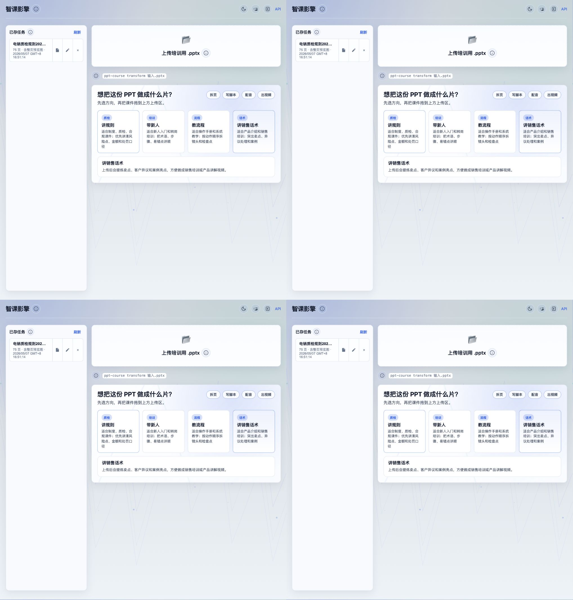

PPT 拖进去，任务立刻进入工作台。
PPT Course Video Pipeline
把培训课件做成可审核的视频生产线
面向企业内训、质检规范和流程教学：上传 PPT 后，系统会拆页、标注素材、生成导演脚本、维护口播音频，并交给 Remotion 渲染成片。

讲规则 / 带新人 / 教流程 / 讲销售话术
上传前先选视频方向，后续脚本和画面节奏会跟着走。
首页管理历史任务，详情页查看 PPT 缩略图。
每页素材、镜头和口播都有 JSON 产物。
Remotion 用确定性时间线出 MP4。
Production Pipeline
从 PPT 到 MP4，每一步都有产物可查
这个项目把课件视频拆成可审、可重跑、可替换模型的产物链路，避免生成过程只停留在一次性结果。
素材入仓
抽取 PPT 预览图、正文、备注和图片素材，形成 raw_material_manifest.json。
导演中枢
按视频方向重组素材，生成 director_manifest.json，记录章节、镜头和画面意图。
声音工坊
逐页维护口播稿和音频版本，支持 MiniMax，也能用 Edge TTS 兜底跑通链路。
成片引擎
把导演脚本转成 render_plan.json 和 input-props.json，由 Remotion 渲染 MP4。
Architecture
项目里真正发生了什么
前端工作台负责上传、选择视频方向和审核产物；后端流水线负责生成 JSON 与媒体文件；Remotion 只接收确定的渲染入参。
PPT / 音频 / 图片
FastAPI 工作台
素材 Manifest
导演 Manifest
Audio Workspace
RenderPlan / Props
Remotion MP4
Runbook
本地运行
.venv/bin/ppt-course serve --port 8765.venv/bin/ppt-course course-material <task_id>.venv/bin/ppt-course rebuild-director <task_id> --no-llm.venv/bin/ppt-course remotion-render-plan <task_id> --max-slides 4